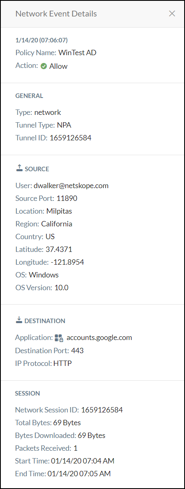
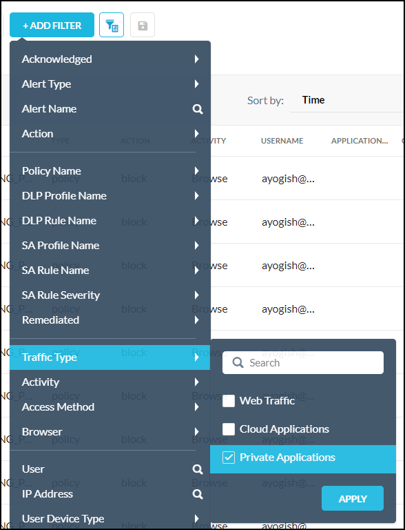

View Events and Alerts for Private Apps
SkopeIT provides insight into private app usage by tracking network events and alerts. In addition to SkopeIT, network events and alerts can be compiled into a report. When creating a report, click Add Widget and select Network or Alert from the Query dropdown list.
Network Events
Network events enable you to monitor private app traffic and view relevant details, like who has access to what, from where, and for how long. All Network Events apply to private apps. To view Network Events, go to SkopeIT™ > Events > Network Events.
 |
To view detailed information about a network event, click the  icon.
icon.
|  |
Alerts
Alerts enable you to verify if any private app policy violations occur, which happen when an attempt to access a private app is explicitly denied by a policy. For more details about using the Alerts page, go to Alerts.
Go to SkopeIT™ > Events > Alerts.
Click +Add Filter, select Traffic Type > Private Applications, and then click Apply.
